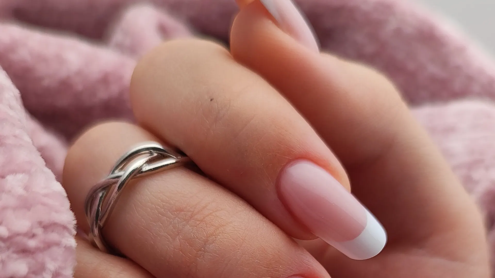
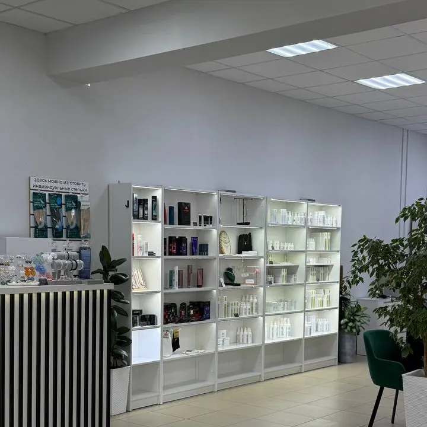
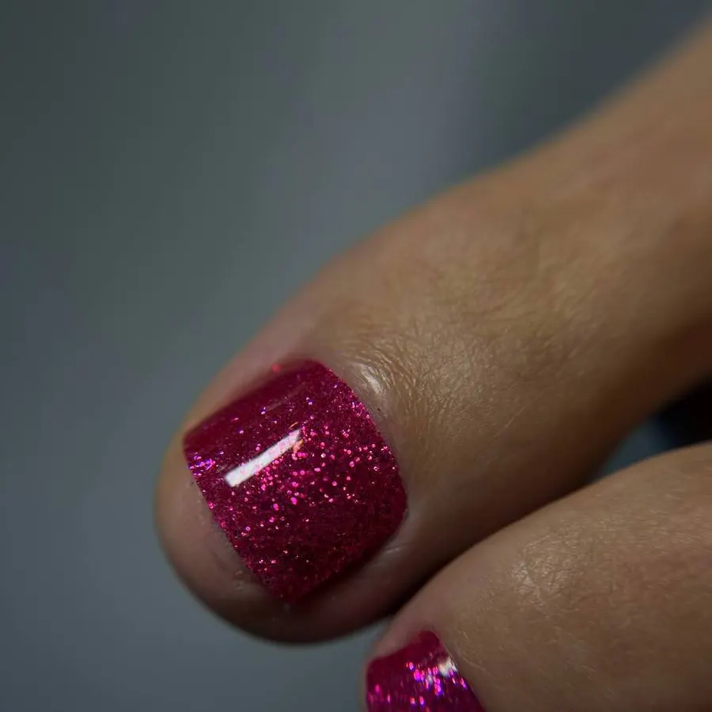
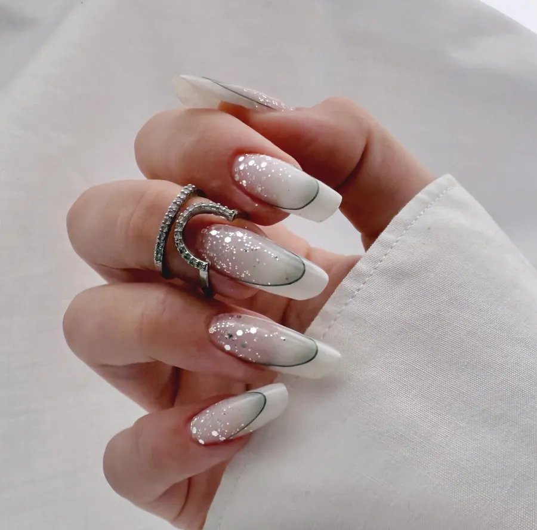

Студия подологии и эстетики · Калуга
Маникюр, педикюр и подология в Калуге – онлайн-запись
Цены по услугам до записи, мастер по имени. Приезжим: запись в Telegram или WhatsApp, отвечаем в рабочие часы.
- Подолог и эстетический педикюр под одной крышей
- Цены по услугам названы до записи
- Оплата картой, рядом парковка

Цены по услугам до записи
Цена зависит от длины ногтей, сложности и мастера, поэтому в строке указан диапазон. «От» – нижняя граница.
Маникюр
- Маникюр с гель-лакомдо 2 900 ₽ – по длине ногтей и мастеруот 2 100 ₽
- Комбинированный, без покрытиядо 1 600 ₽от 1 400 ₽
- Японский маникюр2 300 ₽
- Наращивание ногтейдо 5 000 ₽ – зависит от длиныот 3 300 ₽
- Дизайнсложный дизайн – 1 000–1 500 ₽от 300 ₽
Педикюр
- Полная обработка стопы с покрытиемдо 7 000 ₽от 4 000 ₽
- Полная обработка стопы без покрытиядо 5 000 ₽от 3 000 ₽
- Обработка пальчиков с покрытиемдо 5 000 ₽от 3 000 ₽
- Мужской педикюрдо 6 000 ₽от 3 500 ₽
- SPA-уход для ног700 ₽
Подология
- Консультация подологаполная диагностика стопы, плантограф3 000 ₽
- Обработка вросшего ногтядо 4 000 ₽от 2 500 ₽
- Обработка стержневой мозолидо 1 500 ₽от 1 000 ₽
- Протезирование ногтядо 3 000 ₽, один ноготьот 2 300 ₽
- Выезд на дом3 000 ₽
Цены из онлайн-записи студии на Яндекс.Картах. Итоговую стоимость назовут при записи.
Как записаться
- 01
Выбираете услугу, день и время
В форме справа или ниже – цена видна сразу.
- 02
Сообщение откроется в мессенджере
Telegram или WhatsApp студии, текст уже набран.
- 03
Студия отвечает в рабочие часы
Согласуете время и мастера.



Почему к нам
Подология и эстетика в одной студии
Консультация подолога, вросший ноготь, мозоли, протезирование ногтя – и обычный маникюр с педикюром.
Цена диапазоном до записи
Видно, от чего она зависит: длина ногтей, сложность работы, мастер.
Запись онлайн и из мессенджера
Приезжим удобно: написали в Telegram или WhatsApp, не нужно звонить.
Оплата картой
Рядом с входом парковка, в студии Wi-Fi.
Отзывы с Яндекс.Карт
«Приехав в Калугу на ретрит и в небольшое путешествие,решила позаботиться о своих ручках. Нашла студию по высокому рейтингу и хорошему расположению,записалась быстро»
Надежда Турыгина · 6 июля
«Была проездом, на маникюре у Елены и педикюре у Анны. Шикарный маникюр и педикюр, мою тонкую кожу не порезали ни разу, не пересушили аппаратом. В студии аккуратно, чисто. Обязательно, если получится, приду ещё.»
Svetlana N. · 8 мая
«Делала маникюр и педикюр в 4 руки. Тот случай, когда всё сошлось😍 Прекрасные мастера (Алина и Елена), приятная атмосфера, и даже шикарный лимонад😋😁 Осталась очень довольна, точно приду ещё 🤗»
Ирина Ю. · 18 июня
Отзывы с карточки на Яндекс.Картах, без правок.
Частые вопросы
Сколько стоит маникюр с гель-лаком?
От 2 100 до 2 900 ₽: цена зависит от длины ногтей и мастера. Точную сумму назовут при записи.
Что делает подолог?
Консультация с диагностикой стопы – 3 000 ₽. Дальше – обработка вросшего ногтя, мозолей, онихомикоза, протезирование ногтя, препаратно-аппаратный педикюр.
Можно ли записаться, если я проездом в Калуге?
Да. Выберите время в форме и напишите в Telegram или WhatsApp студии – ответят в рабочие часы.
Вы выезжаете на дом?
Да, выезд на дом – 3 000 ₽.
Как оплатить?
Картой.
Выберите услугу и время
- Адрес
- улица Плеханова, 96, Калуга
- Часы
- Ежедневно, с 09:00
- Телефон
- +7 (953) 322-00-54